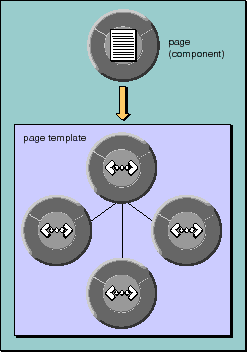

PATH
WebObjects 4.0 Documentation >
WebObjects Developer's Guide
 Table of Contents
Table of Contents  Previous Section
Previous Section
Component Templates
The first step to generating a component's HTML page is to create a template for the component. This template is not the same as the HTML template discussed in the chapter "What Is WebObjects?". In this context, a template is a graph of WOElement and WOComponent objects created by parsing and integrating the component's .html and .wod files (see Figure 29). The network of references corresponds to locations on the page and to parent-child relationships; for instance, a WOForm element would probably have WOTextField and WOSubmitButton children.

Figure 29. An Object Graph for a Page's Template
The template is created at run-time when the component is first requested. The template is part of a larger component definition, which also includes information that allows instances of this component to share resources. Instances carry only the instance-variable values that are distinctive to them; the rest is stored in the component definition. You can, if you wish, enable caching of component definitions so that the component is parsed only once during an application's lifetime. To do so, send the application object a setCachingEnabled: message in its initialization method. Otherwise, the component is parsed each time it changes.
For each request-handling message, WOComponent's default behavior is to forward the message to the objects in its template. To do so, it first retrieves the template from the component definition. The component definition returns the WOElement object at the root of the object graph. This root object, in turn, forwards the message to each of its child elements; if they have any children, these elements send the message to them. Thus, each element has, if appropriate, an opportunity to extract user data from the request, to invoke an action in the component, and to append its HTML representation to the response.
Each HTML element on a template has an element ID to identify it within the object graph. This element ID is dynamically determined as each of the three phases (takeValuesFromRequest, invokeActionForRequest, and appendToResponse) is processed. You can request the current element ID from the WOContext object.
Table of Contents  Next Section
Next Section